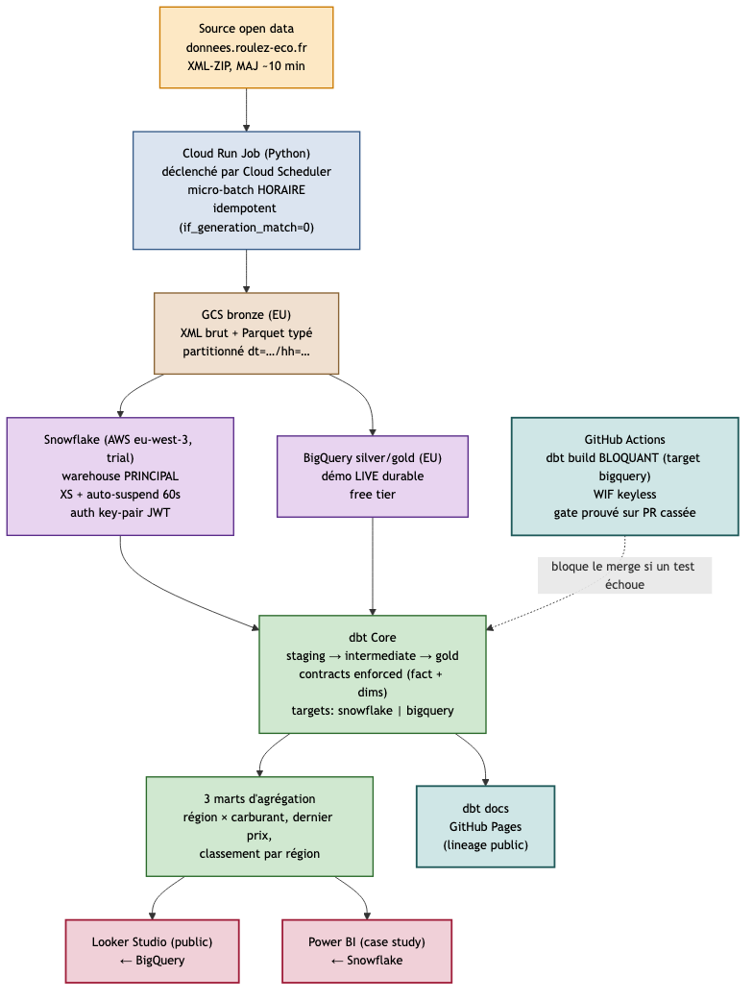

Case study · Analytics Engineer · 2026
Comment transformer un flux open data XML mouvant en dashboards fiables, sans surcoût, sans survente, et avec une CI qui bloque vraiment le merge.
FuelFlow couvre la chaîne complète d'un Analytics Engineer : ingestion micro-batch horaire de l'open data des prix carburants français, médaillon GCS → external tables → dbt, contrats de schéma enforced à grain modèle, CI/CD GitHub Actions qui bloque le merge sur un test rouge, et restitution BI publique. Dual-warehouse Snowflake + BigQuery, parité prouvée, coût d'exploitation ≈ 0 €.
Un comparateur de carburants, un distributeur multi-marques, ou un opérateur de flotte reçoit un flux public de l'État : donnees.roulez-eco.fr, mis à jour environ toutes les 10 minutes, couvrant les ~11 000 stations-service du territoire français et 6 carburants (Gazole, SP95, SP98, E10, E85, GPLc). Il veut exposer des indicateurs prix/géo : prix moyen par région, dispersion, classement des stations les moins chères, carte interactive.
Le piège est invisible. La source est un XML-ZIP en ISO-8859-1 dont le format peut changer du jour au lendemain : la donnée publique est hors contrôle. Le flux est un snapshot complet à chaque tirage : ingéré naïvement, on ré-empile les mêmes prix toutes les heures et la table fact explose. Sans contrats de schéma ni tests automatisés bloquant le merge, un changement source silencieux corrompt le warehouse pendant des semaines avant qu'un dashboard cassé ne révèle le problème.
FuelFlow s'attaque à ces pièges. Le projet livre les disciplines qu'on attend d'un Analytics Engineer : contrats, idempotence, freshness, CI bloquante, médaillon, dbt portable cross-warehouse — tout ça sur le free tier, sans gros volume, avec une honnêteté radicale sur ce qui est fait et ce qui ne l'est pas.

Toutes les heures, sur le calendrier de Paris, un Cloud Run Job déclenché par Cloud Scheduler télécharge le flux, le parse, et dépose à la fois le ZIP brut et un Parquet typé sur GCS. L'idempotence est gérée au niveau objet (if_generation_match=0) : rejouer le même créneau n'écrit pas un doublon.
Les deux warehouses sont alimentés en parallèle : Snowflake (warehouse principal du projet — c'est le signal CV, le trial tourne sur AWS eu-west-3, lecture GCS cross-cloud négligeable à ce volume) et BigQuery (cible CI et démo publique durable sur free tier). dbt construit silver, gold et trois marts d'agrégation question-driven. La parité entre les deux moteurs est mesurée à chaque build.
Sept ADR au format Nygard couvrent les sept choix qui pouvaient être pris différemment. Quelques-uns, distillés :
| Décision | Pourquoi | Conséquence assumée |
|---|---|---|
| Cloud Run Job + Scheduler (pas Composer ni Airflow) | Coût idle = 0 €. Un seul DAG, pas de besoin d'orchestrateur. | Pas d'UI Airflow à montrer ; documenté en explicit, démo via console Cloud Run. |
| Cadence horaire micro-batch (pas « temps réel ») | Le flux source est lui-même un snapshot ; les prix changent ~1–2× par jour. L'horaire capte le signal à coût quasi nul. | Pipeline incrémental dès J1 — passer à 10 min = changer le cron. Le mot « temps réel » est banni des textes. |
| Dual-warehouse Snowflake (trial) + BigQuery (free tier) | Signal CV Snowflake + démo publique durable BigQuery. dbt porte le code entre les deux. | +1,5 jour-homme de travail de portabilité (types, fonctions de date, percentiles). Bénéfice imprévu : le dual-warehouse a attrapé 2 bugs subtils (chapitre v). |
contracts: enforced: true sur le fait + 4 dims |
Drift de schéma source = build qui casse, pas warehouse corrompu en silence. | Les types des colonnes sont rendus par Jinja par target.type — un peu plus verbeux mais réellement portable. |
| Test range prix en sévérité warn, pas error | Le prix est une donnée source non contrôlée ; une promotion ou une saisie aberrante ne doit pas casser la CI. | Les tests error couvrent les invariants structurels (not_null, unique, contracts, relationships). |
| Key-pair JWT pour Snowflake (pas password) | MFA bloque l'auth password en CI ; key-pair contourne proprement. | Clé privée stockée localement sous .secrets/ (gitigné) et en base64 dans GitHub Secrets pour la CI. |
| WIF (Workload Identity Federation) pour GCP en CI — aucune clé SA | Pas de fichier JSON à rotater. OIDC tokens éphémères. Pool repo-scoped. | Configuration initiale un peu plus longue, sécurité radicalement supérieure. |
BLOCKED → CLEANLa parité dim_carburant (6) / dim_date (9 131) / dim_station (9 608) / dim_localisation (7 116) / fct_prix_carburant (38 134) est rigoureusement identique sur les deux warehouses. Les trois marts d'agrégation (agg_dernier_prix_station_carburant, agg_prix_region_carburant, agg_classement_stations) reproduisent les mêmes count, avg, min, max, stddev à la décimale près ; les percentiles approximatifs (APPROX_QUANTILES côté BigQuery, APPROX_PERCENTILE côté Snowflake) divergent légèrement et c'est documenté comme attendu.
Une preuve a particulièrement compté : une PR avec un test volontairement cassé a fait virer la CI au rouge. Le mergeStateStatus est passé à BLOCKED ; la branch protection a refusé le bouton « Merge ». Le fix l'a fait rebasculer en CLEAN. Le projet ne se contente pas d'avoir une CI verte : il prouve que la CI refuse un merge cassé.
Une CI verte est commune. Une CI qui bloque, et qu'on prouve, c'est différent.
Les bugs sont la matière première du projet — la doctrine dual-warehouse les a fait sortir au jour, là où un seul moteur les aurait laissés passer.
polars écrit maj_timestamp en TIMESTAMP_MICROS (Parquet logical type). Snowflake l'expose comme entier dans le VARIANT ; un cast naïf ::TIMESTAMP_NTZ l'interprète comme secondes depuis l'epoch et produit des années en 54 millions. Les tests not_null et unique ne voient rien : les valeurs sont présentes et distinctes. BigQuery, lui, respecte le logical type — d'où la divergence détectée.
Fix · TO_TIMESTAMP_NTZ(VALUE:maj_timestamp::NUMBER, 6) avec scale=6 (microsecondes).
Un test singulier assert_no_future_maj compare maj_timestamp_utc à current_timestamp(). Côté Snowflake, le cast d'un TIMESTAMP_NTZ en TIMESTAMP_TZ applique silencieusement le timezone de session — sur le trial, America/Los_Angeles. Résultat : 835 stations « publiant dans le futur ».
Fix · garder TIMESTAMP_NTZ en convention UTC implicite (cohérent silver) et normaliser current_timestamp() via convert_timezone('UTC', …) côté test, target-aware.
bq add-iam-policy-binding en silent-failL2 appliquait les rôles BigQuery au service account de la CI via bq add-iam-policy-binding. L'API est en preview et requiert allowlisting projet — sur un projet standard, elle échoue silencieusement (exit 0). Découvert seulement en L7 quand la CI a tenté de lire l'external table et s'est pris un 403.
Fix · application des grants per-dataset via le client Python BigQuery, idempotent et reproductible — script infra/gcp/06_ci_sa_grants.sh.